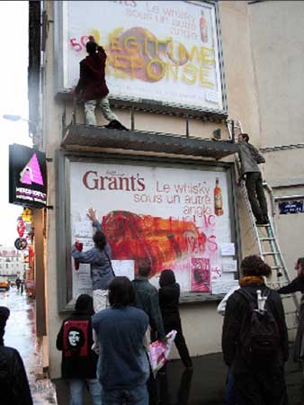

| |
Site dédié à la publication d'informations communiquées par le Collectif des déboulonneurs. En aucun cas ce site n'appelle à des actions illégales. | |
 |
||
|
Accueil du site > Lyon > Face au système publicitaire, dont l’un des piliers est l’affichage dans (...)
Jeudi 27 avril, près du métro saxe gambetta de Lyon, 18h58. Les passants pressent le pas. La journée a été belle mais maintenant le ciel sombre menace. L’orage est imminent. Au sol, des petites grappes de gens se forment. A 19h02, une grosse pluie se met à tomber. Comme pour souligner que, pour ce troisième rendez-vous des déboulonneurs à lyon, la masse critique est enfin atteinte (entre 40 et 50 personnes !). Hésitations. Certains sont déjà trempés, les autres le seront bientôt. Allez. Le groupe se déplace non loin de là, en plein milieu de ce quartier passant et commerçant du 7è. Deux gros panneaux de l’afficheur ströer s’élèvent sur un pan de mur pour vanter sur 24m2 les vertus conceptuelles du Whisky machin. Un barbouilleur se saisit d’une grande échelle déposée là auparavant et s’installe sur une nacelle à quelques mètres du sol. En bas, une barbouilleuse armée d’un pinceau d’artiste ouvre un pot de confiture débourdant d’une couleur pivoine et grimpe une marche ou deux sur un escabeau. Sous la pluie, on applaudit ! Le tout premier barbouillage au pinceau commence... et dégouline un peu. On applaudit SVP ! Pouet ! Pouet ! la police arrive en girophare. Passait-elle justement par là ? Trois agents sortent de leur voiture, bientôt rejoints par une autre brigade. En un instant, deux déboulonneurs interviennent, specialement entraînés pour porter assistance aux policiers dans ce genre de situation. En quelques secondes, les choses sont claires. La police accepte d’attendre, un sourire en coin, que l’opération se termine. L’un des policiers, détendu et d’humeur facile, prend des notes sur ce qui se passe (comment ça s’écrit déboulonneurs ?) et relève les identités des 2 barbouilleurs, ainsi que d’un ou deux camarades leur ayant porté assistance. 
La récupération de cet espace public accaparé par la publicité se réclame de la "Légitime Réponse". Sur le panneau du bas, une calligraphie pluvieuse dénonce "Espace public, profits privés". A titre documentaire, des écriteaux de papier sont appliqués sur les panneaux. Des journalistes filment la scène (tlm), d’autres prennent des notes (lyoncap, etc.). Juchée sur l’escabeau une déboulonneuse entame une explication publique qui ne craint pas la pluie. Elle est chaudement applaudie. A quelques minutes d’intervalles, deux passants ulcérés ("intempestifs", dans le jargon en usage chez les déboulos) se manifestent bruyamment, convaincus de voir dans ce barbouillage pluvieux LA preuve, s’il en fallait une de plus, que décidément une révolution est en marche dans ce pays et qu’il va falloir remettre de l’ordre dans tout ça (même "à coup de fusils" s’il le faut !). Les déboulonneurs, avec leurs mots et leurs pinceaux, hésitent un peu. Eclats de voix. Une bonne occasion d’apprendre. Et puis voila, l’orage finit par passer, sans drame ni consensus. Au bout d’une quarantaine de minutes, prise de paroles, mouillage et barbouillage sont terminés. La pluie cesse et le soleil revient. On grelotte. La police saisit quelques pinceaux mais, clémente pour cette fois, laisse l’échelle. Fin de l’action. Le groupe s’éloigne et se disperse doucement, avec l’inertie propre aux choses mouillées. Un sourire aux lèvres. Les déboulonneurs, avec d’autres insoumis, proposent d’agir et penser ensemble pour ne pas se soumettre au dictat des afficheurs et des publicitaires. Face à la colonisation de l’espace public et de nos vies par le système plublicitaire, la désobéissance civile est légitime ! Merci pour votre soutien et participation (deboulonneurslyon arobatch no-log.org). Big up Bouchedi pour les photos. Récidive lyonnaise samedi 27 mai en fin de matinée ! Action simultanée d’envergure nationale. |

|
Site utilisant SPIP - Hébergement Ouvaton
|